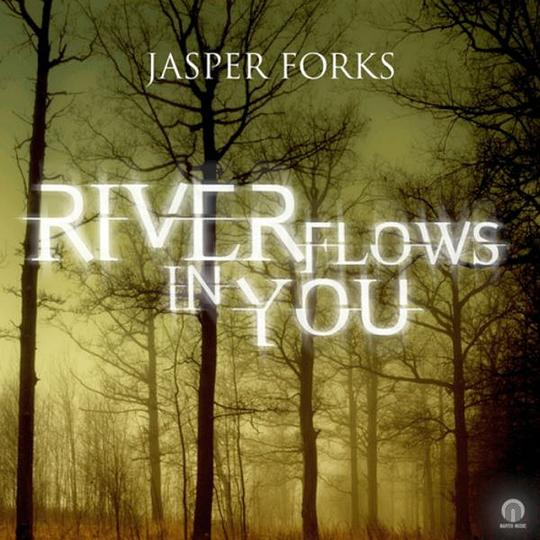

2014年11月
5 条
其中 0 条带正文
广播发布后不可编辑，所以每条都是那一刻的原话。
2014-11-30 20:44:34
听过  Panorama Of Fall Colors Part.2
Panorama Of Fall Colors Part.2
2014-11-29 21:42:02
听过 
2014-11-26 23:03:10
 前目的地 / Predestination
前目的地 / Predestination2014-11-16 00:11:04
 我是山姆 / I Am Sam
我是山姆 / I Am Sam2014-11-09 22:53:16
 招魂 / The Conjuring
招魂 / The Conjuring
广播发布后不可编辑，所以每条都是那一刻的原话。
听过 Panorama Of Fall Colors Part.2
听过 